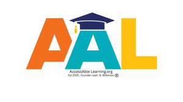

Trade Mark Journal No.2026/008 20 February 2026
UK00004322522 12 January 2026 (41)

- Class 41
- Education and training; Education, teaching and training; Training and education services; Education and training services; Education and training consultancy; Vocational education and training services; Provision of education and training; Provision of training and education; Computer education training; Vocational training; Computer education training services; Linguistic education and training services; Education services relating to vocational training; Training; Education; Training or education services in the field of life coaching; Career counselling relating to education and training; Educational and training services; Guidance (Vocational -) [education or training advice]; Vocational guidance [education or training advice]; Career counselling [training and education advice]; Vocational training services; Career and vocational training; Vocational education; Vocational training courses (Provision of -); Teacher training services; Education and training in the field of business management; Vocational skills training; Training courses; Employment training; Career advisory services (education or training advice); Education and training in the field of occupational health and safety; Education and training services in the field of occupational health and safety; Education services relating to business training; Training of teachers; Education and instruction; Education and training in the field of music and entertainment; Vocational skills training (Provision of -); Academy services (Education -); Education academy services; Academy education services; Training and further training consultancy; Training and instruction; Providing of training, teaching and tuition; Teaching of diet education; Postgraduate training courses; Education and training in the field of automotive engineering; Academies [education]; Education and instruction services; Educational and training programs in the field of risk management; Training courses (Provision of -); Provision of training courses; Provision of training courses in personal development; Training services; Education academy services for teaching construction drafting; Career counseling [education]; Education and training services in relation to business management; Instructional and training services; Educational services for providing courses of education; Organisation of training courses; Providing courses of training; Educational and training services relating to healthcare; Consultancy relating to vocational skills training; Education academy services for teaching acting; Education academy services for teaching languages; Education services relating to the training of personnel in food technology; Training in philosophy; Educational certification services, namely, providing training and educational examination; Provision of education courses; Consultancy services relating to the education and training of management and of personnel; Arrangement of training courses in teaching institutes; Educational and training services relating to sport; Physical education instruction; Coaching [training]; Courses (Training -) relating to science; Training of sports teachers; Providing continuing medical education courses; Courses (Training -) relating to research and development; Courses (Training -) relating to medicine; Training in administration; Residential training courses; Training consultancy; Postgraduate training courses relating to engineering technology; Vocational education in the field of mechanics; Education services; Vocational education relating to self-defence; Provision of training courses for young people in preparation for employment; Courses (Training -) relating to engineering; Education academy services for teaching art history; Religious training; Residential education courses; Courses (Training -) relating to finance; Organisation of conferences relating to vocational training; Tuition in animal training; Recreation and training services; Providing continuing nursing education courses; Life coaching (training); Postgraduate training courses relating to management studies; Entertainment, education and instruction services; Courses (Training -) relating to management; Language training; Training in the development of computer programs; Providing continuing dental education courses; Organisation of training seminars; Practical training services; Provision of training; Adult training; Publication of educational and training guides; Providing training and educational examination for certification purposes; Business training; Physical training services; Consultancy services relating to the development of training courses; Courses (Training -) relating to banking; Courses (Training -) relating to insurance; Services of schools [education]; Educational and training services relating to games; Pre-school education; Health education; Aerobics training services; Training services for nurses; Personal development training; Educational services relating to sales training; Physical education; Provision of training courses for young people in preparation for careers; University education services; Education services for imparting language teaching methods; Conducting training courses relating to nutrition online; Sports training; Training in sports; Provision of facilities for employment skills training; Training of swimming teachers; Education and training services in relation to real estate management; Arranging of training courses; Management training services; Training in business skills; Training related to nutrition; Career information and advisory services (educational and training advice); Education courses relating to automation; Organising of education seminars; Education examination; Courses (Training -) relating to accountancy; Physical education services; Health and fitness training.
Leah Wilkinson